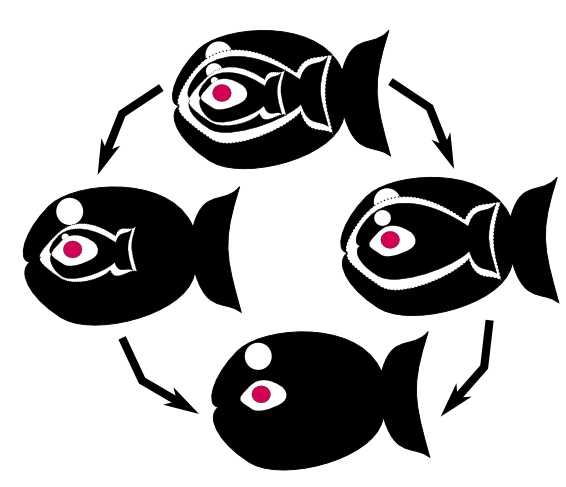

Fishy Monad Tutorial
(This time you will get monads, guaranteed!)
Some time ago I was a Haskell noob and I was struggling to understand the concept of a monad.
And then it came to me! Monads are not warm and fuzzy funny things! They are wet, slippery, stinking fish! Let's get started.
A. Three Johns
This is a small piece of rock, floating near the bottom of the sea:
Here comes Little John and swallows it!
But here comes Little John's brother, Middle John, and swallows him! (I'd say kinda bad brother he is!)
What happens inside Middle John's belly? There's Little John and the piece of rock in Little John's belly:
A thing a bit unnatural happens! The two fish somehow fuse together into one bigger fish!
Suddenly appears the third of brothers, Big John. In a blink of an eye he swallows his brothers:
X-ray reveals this convoluted conjugation:
If Middle John swallows Little John, and Big John swallows Middle John, who fuses with who first? The answer is: It doesn't really matter! The situation is rather confluent:

B. Mr Shrimp
On the bottom of the sea lives Mr Shrimp. He's a funny little fellow.
He's got a rather odd hobby: he swaps stones in fish. `Give me your pink stone, and I'll give you my yellow stone' is his motto.
No worries, mate! We can swap even if you're just being swallowed!
Or, if you prefer, we can swap after you guys fuse, it's up to you, there's really no difference.
C. Tuni fish
There's one more guy, dolorously drifting a bit closer to the sea bottom...
If he swallows Little John, Little John comes out of the fuse. Nothing changes for Johnny.
If Big John swallows Tuni, Big John comes out of the fuse. Nothing changes for Johnny.
Mr Shrimp takes pity on Tuni. He gives him stones for free.
The End